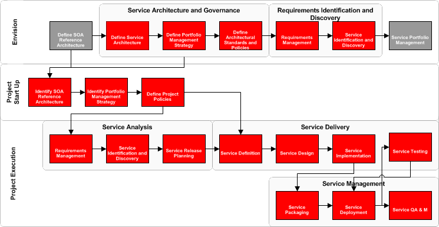

OUM |
Service-Oriented Architecture (SOA) Core Workflow Overview |
||
Method Navigation |
Current Page Navigation |
||
|
|
||||||||
The Service-Oriented Architecture (SOA ) Core Workflow View is used to provide a conceptual view of the SOA approach that is provided by OUM. This view is intended to describe how OUM supports SOA from Envision through Implement. This view is not used to deliver an engagement, but rather to describe at a high-level, the work that is done to prepare an enterprise for SOA. The view highlights the service engineering tasks of OUM and explains how they relate to each other.
The SOA Core Workflow should be used to help organizations understand at a high level the work that is outlined in OUM to execute projects within a Service-Oriented Architecture (SOA) environment, either as an initial project, or as subsequent projects.
This view should help the business to understand how the method supports SOA from a holistic approach, as a contiguous process. Although it may take several planning projects, to establish governance, modeling or reference architectures, and several SOA implementation projects to fully implement SOA within an organization.
This view will likely never be used in whole, to run a single project but rather to facilitate a high-level discussion of the possible considerations as an enterprise moves to fulfill a SOA initiative. The view is used to illustrate the path to SOA through OUM.
This view includes tasks that have SOA Specific Guidance or considerations in them. It does not include ALL tasks that may be required for complete project delivery but only the service-specific tasks and guidance. In other words, this view highlights the SOA tasks of OUM and explains how they relate to each other.
In practice you will use this view to understand the flow of SOA throughout a project, but in the context of a project delivery, you should use the Service-Oriented Architecture Project Delivery View, or one of the SOA Planning views, which already include the Service Engineering tasks.
Service-Oriented Architecture (SOA) is an Information Technology (IT) strategy that, in many cases, spans the entire enterprise. IT projects are implemented to fit within an SOA and are therefore just a piece of the larger SOA initiative. If projects are developed independently, without consistent tie-in and guidance from the overall SOA leadership team, the effectiveness and value of each delivery is substantially reduced. Fundamental to successful SOA adoption is the establishment of an Enterprise SOA Framework which is used to tie project delivery, and operations into the overall SOA Governance structure and Reference Architecture, as well as apply the best usage of investment in Service Infrastructure.
This view can be referenced whenever an understanding of how OUM is used to support a SOA Initiative.
Service-Oriented Architecture (SOA) requires planning that spans the enterprise or area of focus within the business that is applying it. Projects may not be simply architected, constructed and delivered independently in an effective SOA. Consistency and planning must be established across deliveries to ensure that the delivery maximizes the benefit of the SOA, as well as contributes to the overall SOA effectiveness.
Industrial strength SOA requires at least 4 areas of focus in order to mature successfully. These focus areas are:
This SOA Core Workflow View is focused on the realization of Enterprise Service Engineering and Management.
Enterprise Service Engineering and Management requires that the method for delivering projects that will utilize SOA must be executed with a consistent strategy from inception through delivery and into steady state. This consistent strategy can be either planned for and developed in advance of any project, or developed at the same time as delivering a pilot project. The focus of an engagement based in this view is the development of the Enterprise Service Engineering Framework in conjunction with the delivery of a project. This allows the framework to be developed more thoroughly. The strategy can then be refined with each additional delivery going forward.
It is clear that Enterprise Service Engineering spans more than simply identifying and engineering services. Aside from influencing the software development lifecycle in many areas, this framework also impacts operations, and the overall enterprise architecture.
The delivery process then becomes a natural extension of the adopted SOA, rather than separate entities with unique goals. Further, the delivery process for SOA based projects needs to be augmented with additional activities in order to ensure the following:

The diagram above indicates the SOA Engineering process within OUM.
Service Architecture and Governance is the foundation of a SOA Initiative and is performed during Envision. During Service Architecture and Governance you define what constitutes a service, the way it is recognized by the organization, as well as the taxonomy that the organization wants to use for its Service Architecture and Governance.
You define the Portfolio Management Strategy that includes the identification or creation of an Enterprise Repository, the Service Lifecycle, and Versioning Strategy, and the identification of all assets that you will need. You also populate the repository with existing assets. Finally, you define the architectural standards and polices.
Requirements Identification and Discovery is performed during Envision for enterprise services. Requirements Identification and Discovery is split into two areas:
Requirements Management includes the analysis of the Business Strategy. Project requirements are gathered. Requirements Models may be created or updated as a result of this effort. When requirements have been identified during a project, a check is performed against the Enterprise Repository to verify if there are any identical or partly matching requirements. Identical requirements could potentially be reused. At the end, the requirements will be prioritized.
Service Identification & Discovery includes identification of candidate services based on various models. The candidate services are reviewed and the relevant ones are further detailed and scored for justification.
The Project Start Up area defines the steps that should be carried out at the beginning of all SOA projects which are based on the approach described in this view, this start up is accomplished with tasks from the OUM Manage focus area.
Project Start Up is concerned with checking and understanding existing SOA strategy and specific project implications. This includes checking the SOA reference architecture and understanding the service portfolio management strategy. If a SOA Reference Architecture or a service portfolio management strategy are lacking in the enterprise, you should create them in the context of the project with the view to extend them to the enterprise whenever appropriate.
Service Analysis is performed during Implement for project services. Service Analysis is split into three areas:
Requirements Management includes the analysis of the Business Strategy. Project requirements are gathered. Requirements Models may be created or updated as a result of this effort. When requirements have been identified during a project, a check is performed against the Enterprise Repository to verify if there are any identical or partly matching requirements. Identical requirements could potentially be reused. At the end, the requirements will be prioritized.
Service Identification & Discovery includes identification of candidate services based on various models. The candidate services are reviewed and the relevant ones are further detailed and scored for justification.
Release Planning is only performed when services are actually implemented. During Release Planning a release plan for services is created or updated. The release plan is a living document that contains the high-level release information for all in-flight projects and shared assets. This allows for managing dependencies across projects or streams that arise due to the SOA principle of increasing reuse and limiting duplication of functionality
SOA Delivery covers the core engineering processes and guidelines required to define, design, construct and test services. For details on how SOA projects are delivered you should refer to the Service-Oriented Architecture (SOA) Project Delivery View and it's associated Supplemental Guide.
At a high level, SOA consists of four areas that are revisited iteratively throughout the delivery process:
Service Definition covers the set of activities required to effectively define service contracts from a service candidate. The service contract for a service provides the detailed description of both functional and non-functional characteristics that must be fulfilled by the interface and the implementation in order for a service to be realized.
Service Design is covers the Design of the interface for a service. Although this sounds like a relatively straightforward task, the goal of service design is to come up with an interface that will maximize reuse while conforming to the demands of the service contract. The service interface must be designed with the consumer’s needs in mind, but also with an eye towards the non-functional and service enablement requirements dictated through the service’s contract. Therefore, service design may include a series of trade-offs where a balanced interface between consumer and contract are sought after.
Service Implementation includes delivering the implementation of a service. This implementation is exposed through the service interface, but is not only responsible for implementing the interface in accordance to the contract, but rather the entire service in accordance with the contract. This includes coverage of all functional and non-functional requirements, as well as the service enablement requirements for the service.
Service Testing can run in parallel with design and implementation: it begins after service definition and continues throughout service delivery (and beyond). Once service definition has completed, the set of service contracts have been defined which provide the necessary test criteria required before service test planning can begin. Once service design has completed, the interface can be used to construct the service test cases, which should be constructed in parallel with service implementation. The actual testing cycles proceed once service implementation has advanced far enough to begin functional testing. Service testing, with respect to service delivery, concludes once all acceptance criteria have been satisfied.
Service Management covers the topics of Service Deployment Strategy and Service Operation, Administration and Management (OA&M). Workshops are utilized to assist the customer in identifying their service deployment strategy and Operations Administration and Maintenance policies and procedures. It consists of 3 areas:
Service Packaging includes grouping the services for concurrent deployment and subsequent management.
Service Deployment is the transition to production of the services.
Service OA&M is not only the monitoring and management of services but also enforcement or monitoring of SLAs contained in contracts and usage agreements.
Back to Top
The SOA IN OUM PAGE is used to access all OUM SOA views to plan and model SOA in preparation for SOA implementation projects.
The SOA Core Workflow has been mapped to the Envision, Implement and Manage Focus Areas of Oracle Unified Method to help show which tasks would typically be performed for all aspects of SOA planning and implementation. It provides an overview of where all the services tasks are in OUM, and can be used as to help understand all aspects of a SOA Initiative as supported by OUM.

Copyright © 2006, 2016, Oracle and/or its affiliates. All rights reserved.